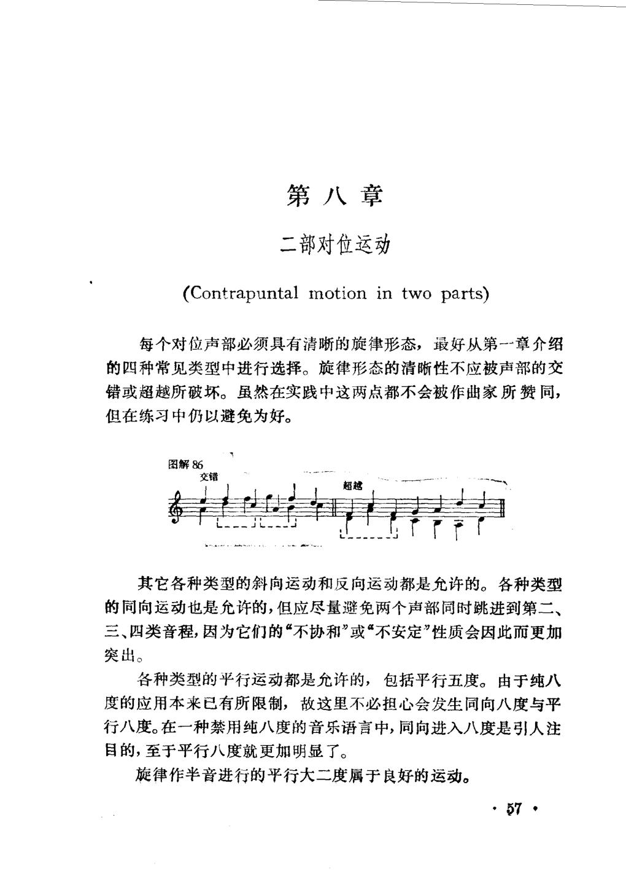
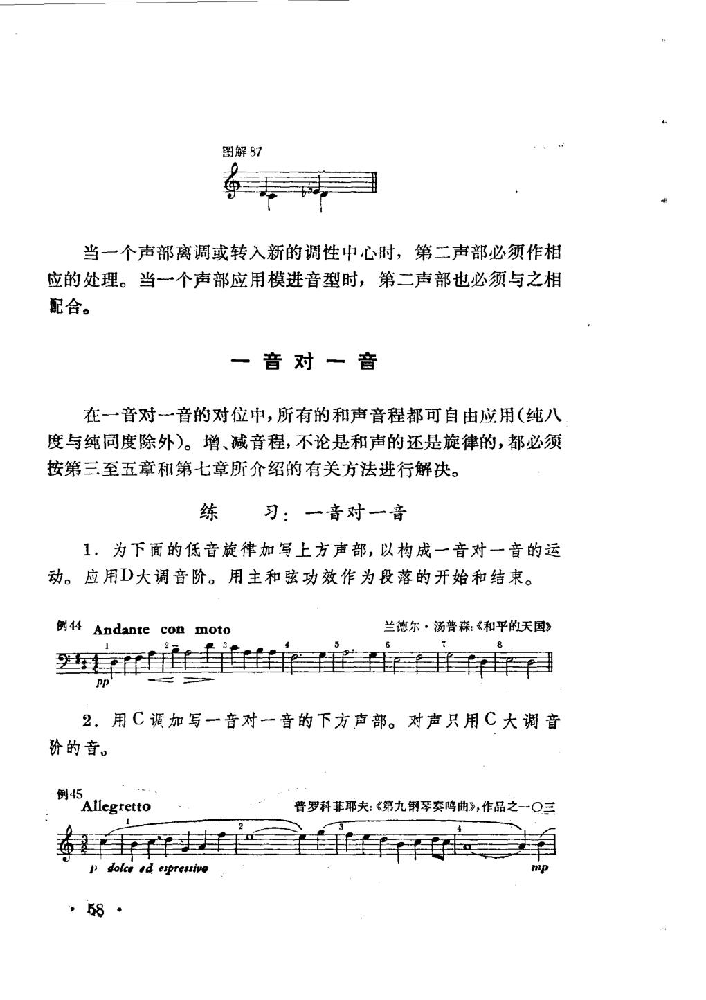
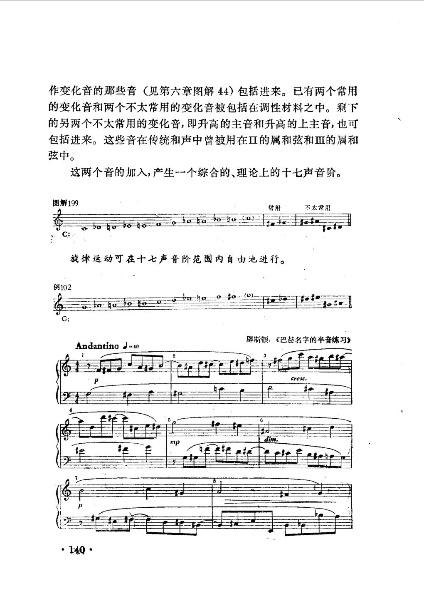

PDF 第 59 页 · 印刷页约 57
第八章 二部对位运动
第八章
二部对位运动
(Contrapuntal motion in two parts)
每个对位声部必须具有清晰的旋律形态，最好从第--章介绍
的四种常见类型中进行选择。旋律形态的清晰性不应被声部的交
错或超越所破坏。虽然在实践中这两点都不会被作曲家所赞同，
但在练习中仍以避免为好。
图解86
交错
超越
其它各种类型的斜向运动和反向运动都是允许的。各种类型
的同向运动也是允许的，但应尽量避免两个声部同时跳进到第二、
突出。
各种类型的平行运动都是允许的，包括平行五度。由于纯八
度的应用本来已有所限制，故这里不必担心会发生同向八度与平
行八度。在一种禁用纯八度的音乐语言中，同向进入八度是引人注
目的，至于平行八度就更加明显了。
旋律作半音进行的平行大二度属于良好的运动。
7
- 现代对位可以允许平行五度
当纵向音响不再由传统三和弦功能主导时，平行完全音程可以成为有控制的线条结果。米德尔顿的规则同时保留了纯八度的限制；这不是“所有现代作品都如此”。
“各种类型的平行运动都是允许的，包括平行五度。由于纯八度的应用本来已有所限制，故这里不必担心会发生同向八度与平行八度。”
- 现代线条优先考虑旋律形态与声部独立
每个对位声部仍要有清楚的旋律形态；交错与超越会破坏辨识度。和声可以自由，但线条的方向、临界音与跳进补偿仍要控制。
“每个对位声部必须具有清晰的旋律形态……旋律形态的清晰性不应被声部的交错或超越所破坏。”
PDF 第 60 页 · 印刷页约 58
第八章 二部对位运动：一音对一音
图解87
当一个声部离调或转入新的调性中心时，第二声部必须作相
应的处理。当一个声部应用模进音型时，第二声部也必须与之相
配合。
一音对一音
在一一音对-一音的对位中，所有的和声音程都可自由应用（纯八
度与纯同度除外）。增、减音程，不论是和声的还是旋律的，都必须
按第三至五章和第七章所介绍的有关方法进行解决。
练习：一音对一音
1．为下面的低音旋律加写上方声部，以构成一音对一音的运
动。应用D大调音阶。用主和弦功效作为段落的开始和结束。
例44Andanteconmoto
兰德尔·汤普森：《和平的天国》
8
21
pp
2．用C调加写一音对一音的下方声部。对声只用C大调音
阶的音。
例45
普罗科菲耶夫：《第九钢琴奏鸣曲》，作品之一O三
Allegretto
1 dolce ed espressivo
58
PDF 第 142 页 · 印刷页约 140
第十五章 调性扩展的极限
作变化音的那些音（见第六章图解44）包括进来。已有两个常用
的变化音和两个不太常用的变化音被包括在调性材料之中。剩下
的另两个不太常用的变化音，即升高的主音和升高的上主音，也可
包括进来。这些音在传统和声中曾被用在Ⅱ的属和弦和Ⅲ的属和
弦中。
这两个音的加入，产生-一个综合的、理论上的十七声音阶。
图解199
不太常用
常用
旋律运动可在十七声音阶范围内自由地进行。
例102
辟斯顿：《巴赫名字的半音练习》
AndantinoJ=60
cresc.